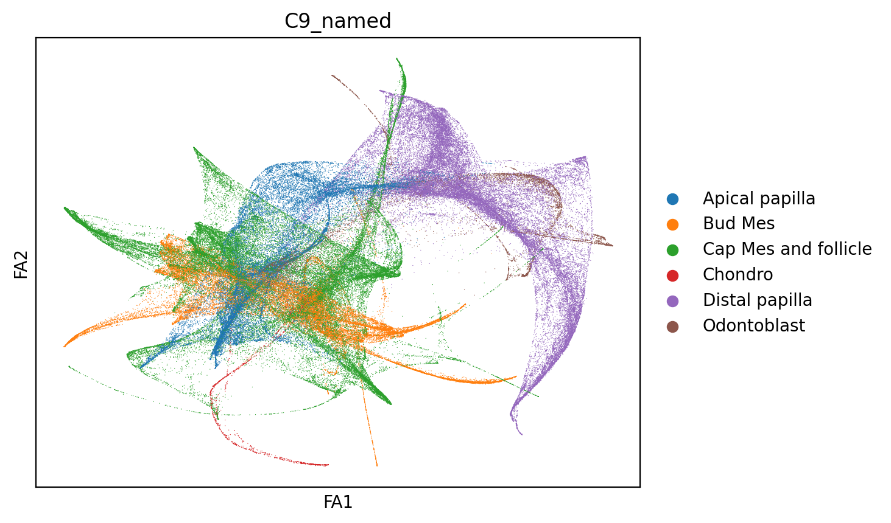
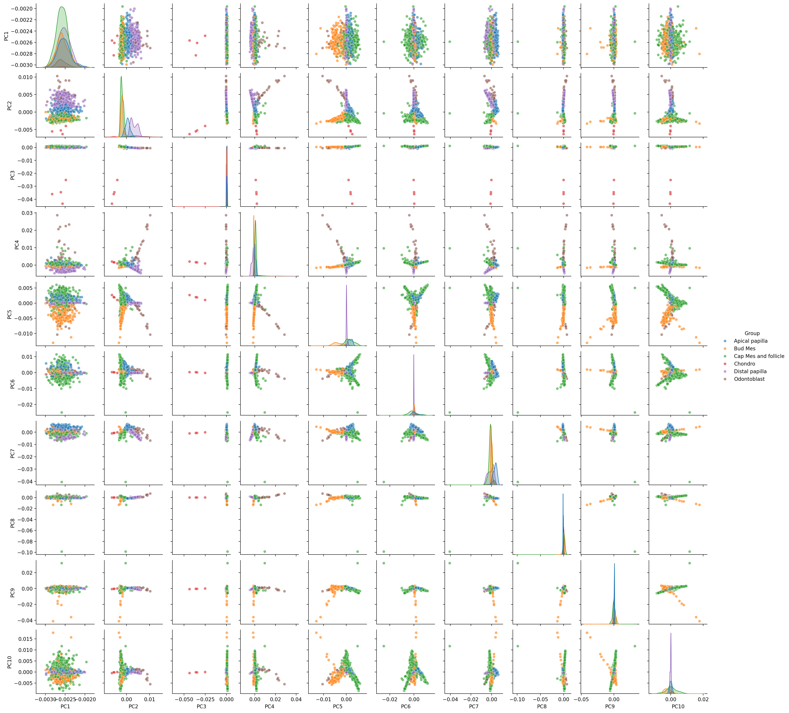

Trajectory reduction with diffusion map in scanpy#
Setting up Environment#
[23]:
import scanpy as sc
import numpy as np
import pandas as pd
import scanpy.external as sce
import seaborn as sns
import matplotlib.pyplot as plt
from sklearn.preprocessing import StandardScaler
[3]:
%config InlineBackend.figure_format = 'retina' # For high-resolution displays
%config InlineBackend.print_figure_kwargs = {'dpi': 200} # Set DPI
[4]:
sc.settings.figdir = "../../results/trajectory/20241119_trajectory_embedding/"
Diffusionmap#
Diffusion maps were computed using scanpy with two different principal component inputs (10 and 30 PCs). The diffusion components were subsequently embedded into two-dimensional space using force-directed graph visualization.
[5]:
mes = sc.read("../../processed_data/integrated_data/20241118_mes.h5ad")
[6]:
mes.obsm["X_pca"] = mes.obsm['X_X_SCANVI'].copy()
[7]:
sc.pp.neighbors(mes,n_neighbors=20, n_pcs=30)
[8]:
mes
[8]:
AnnData object with n_obs × n_vars = 152988 × 36303
obs: 'orig.ident', 'nCount_originalexp', 'nFeature_originalexp', 'nCount_RNA', 'nFeature_RNA', 'coarse_anno_1', 'total_counts', 'log10_total_counts', 'n_genes_detected', 'mito_frac', 'ribo_frac', 'compl', 'size_factors', 'Sample', 'Project', 'Core_datasets', 'Mandibular_Maxillary', 'Molar_Incisor', 'Tooth.position', 'Histology', 'Sex', 'Gene.Type', 'Knockout_gene', 'Cre', 'Treatment', 'FACs', 'Age', 'Stage', 'Development.stage', 'Disease', 'Strain', 'Dissociation_enzyme', 'Machine', 'Species', 'Related.assay', 'Journal', 'Data.Source', 'Data.location', 'new_totals_log', 'n_genes_by_counts', 'log1p_n_genes_by_counts', 'log1p_total_counts', 'pct_counts_in_top_50_genes', 'pct_counts_in_top_100_genes', 'pct_counts_in_top_200_genes', 'pct_counts_in_top_500_genes', 'scDblFinder_class', 'leiden', 'anno_level_1', 'Cell_ID', 'leiden_clusters_level_1', 'leiden_clusters_level_2', 'leiden_clusters_level_3', 'leiden_clusters_level_4', 'leiden_clusters_level_5', 'leiden_clusters_level_6', 'K2', 'K9', 'K19', 'K29', 'K65', 'K104', 'batch', 'C2', 'C7', 'C19', 'C9', 'C29', 'C57', 'C92', 'C2_named', 'C9_named', 'C19_named', 'C29_named', 'C57_named', 'C92_named'
var: 'gene_symbols', 'n_cells', 'n_cells_by_counts', 'mean_counts', 'log1p_mean_counts', 'pct_dropout_by_counts', 'total_counts', 'log1p_total_counts', 'highly_variable', 'means', 'dispersions', 'dispersions_norm', 'highly_variable_nbatches', 'highly_variable_intersection'
uns: 'neighbors'
obsm: 'X_X_SCANVI', 'X_X_umap', 'X_pca'
obsp: 'distances', 'connectivities'
[10]:
sc.tl.diffmap(mes,n_comps= 10)
[23]:
mes.obsm["X_diffmap"].shape
[23]:
(152988, 30)
[25]:
sc.pp.neighbors(mes, n_neighbors=30, use_rep="X_diffmap")
[27]:
sc.tl.draw_graph(mes)
[28]:
sc.pl.draw_graph(mes,color="C9_named")

[12]:
diffmapDf = pd.DataFrame(mes.obsm["X_diffmap"])
diffmapDf.index = mes.obs_names
[32]:
diffmapDf.to_csv("../../processed_data/framework/embedding/20241119_mes_diffmap.csv")
[13]:
diffmapDf.to_csv("../../processed_data/framework/embedding/20241119_mes_diffmap_10.csv")
[14]:
mes
[14]:
AnnData object with n_obs × n_vars = 152988 × 36303
obs: 'orig.ident', 'nCount_originalexp', 'nFeature_originalexp', 'nCount_RNA', 'nFeature_RNA', 'coarse_anno_1', 'total_counts', 'log10_total_counts', 'n_genes_detected', 'mito_frac', 'ribo_frac', 'compl', 'size_factors', 'Sample', 'Project', 'Core_datasets', 'Mandibular_Maxillary', 'Molar_Incisor', 'Tooth.position', 'Histology', 'Sex', 'Gene.Type', 'Knockout_gene', 'Cre', 'Treatment', 'FACs', 'Age', 'Stage', 'Development.stage', 'Disease', 'Strain', 'Dissociation_enzyme', 'Machine', 'Species', 'Related.assay', 'Journal', 'Data.Source', 'Data.location', 'new_totals_log', 'n_genes_by_counts', 'log1p_n_genes_by_counts', 'log1p_total_counts', 'pct_counts_in_top_50_genes', 'pct_counts_in_top_100_genes', 'pct_counts_in_top_200_genes', 'pct_counts_in_top_500_genes', 'scDblFinder_class', 'leiden', 'anno_level_1', 'Cell_ID', 'leiden_clusters_level_1', 'leiden_clusters_level_2', 'leiden_clusters_level_3', 'leiden_clusters_level_4', 'leiden_clusters_level_5', 'leiden_clusters_level_6', 'K2', 'K9', 'K19', 'K29', 'K65', 'K104', 'batch', 'C2', 'C7', 'C19', 'C9', 'C29', 'C57', 'C92', 'C2_named', 'C9_named', 'C19_named', 'C29_named', 'C57_named', 'C92_named'
var: 'gene_symbols', 'n_cells', 'n_cells_by_counts', 'mean_counts', 'log1p_mean_counts', 'pct_dropout_by_counts', 'total_counts', 'log1p_total_counts', 'highly_variable', 'means', 'dispersions', 'dispersions_norm', 'highly_variable_nbatches', 'highly_variable_intersection'
uns: 'neighbors', 'diffmap_evals'
obsm: 'X_X_SCANVI', 'X_X_umap', 'X_pca', 'X_diffmap'
obsp: 'distances', 'connectivities'
[16]:
pd.DataFrame(mes.uns["diffmap_evals"]).to_csv("../../processed_data/framework/embedding/20241119_mes_diffmap_10_uns_evals.csv")
Visualize components in diffusion map#
We created a function to visualized the components in diffusion map.
[17]:
def plot_pairwise_pcs(data, groups, n_components=6, sample_size=1000, save_path=None):
# Create DataFrame
df = pd.DataFrame(
data[:, :n_components],
columns=[f'PC{i+1}' for i in range(n_components)]
)
df['Group'] = groups
# Random sampling if needed
if sample_size and len(df) > sample_size:
df = df.sample(n=sample_size, random_state=42)
# Create pairplot
g = sns.pairplot(
df,
hue='Group',
diag_kind='kde',
plot_kws={'alpha': 0.6, 's': 30},
height=2
)
# Save plot if path is provided
if save_path:
# Method 1: Save as PNG
g.savefig(save_path + '.png', dpi=300, bbox_inches='tight')
# Method 2: Save as PDF (better for vector graphics)
g.savefig(save_path + '.pdf', bbox_inches='tight')
# Method 3: Save as SVG (vector format)
g.savefig(save_path + '.svg', bbox_inches='tight')
plt.show()
return g
[18]:
diffArray = diffmapDf.to_numpy()
[26]:
plot_pairwise_pcs(diffArray,mes.obs["C9_named"].values,n_components=10)

[26]:
<seaborn.axisgrid.PairGrid at 0x7efcaece69d0>
[34]:
drawGraph = pd.DataFrame(mes.obsm["X_draw_graph_fa"])
drawGraph.index = mes.obs_names
diffmapDf.to_csv("../../processed_data/framework/embedding/20241119_mes_diffmap_drawgraph.csv")